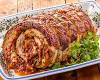

Home| Receita 1| Receita 2| Receita 3|

O rocambole de carne moída é uma receita prática e deliciosa que agrada a todos com seu sabor e apresentação. Preparado com carne moída temperada com um pacote de sopa de cebola, tempero verde e sal, ele é uma opção criativa e diferenciada para uma refeição especial ou uma ceia comemorativa. Para o preparo, a carne moída temperada é espalhada em uma superfície plana, sendo recheada com presunto e queijo. Em seguida, é delicadamente enrolada, formando o rocambole, e assada no forno até dourar. Esse prato é uma excelente opção para uma refeição principal, servido fatiado, proporcionando um visual atrativo e um sabor irresistível. Além disso, pode ser acompanhado por uma variedade de complementos, como saladas, arroz, batatas, entre outros, oferecendo um cardápio diversificado e saboroso para sua refeição :3
O bolo de fubá é um dos mais tradicionais do nosso país: é simples, gostoso e perfeito para aqueles momentos regados com um café quentinho. Com poucos ingredientes e passos simples, esse bolo oferece um sabor clássico que aquece o coração. Para preparar esta receita de bolo de fubá, basta bater todos os ingredientes no liquidificador até obter uma massa homogênea e então assar até que o bolo esteja dourado e firme. O resultado é um bolo de fubá fofinho, com uma textura delicada e um aroma inconfundível da farinha de milho. Cada fatia é um convite a um sabor autêntico de infância, perfeito para acompanhar um café ou chá, de preferência na companhia da família ou dos amigos. Para aprender como fazer bolo de fubá simples ficar ainda mais gostoso, não esqueça de botar na mesa uma boa manteiga ou geleia para acrescentar em cada pedaço. Desfrute desta receita simples de bolo de fubá, repleta de tradição e doçura.

É pavê, pacumê e pra ser muito feliz! Essa receita de pavê de chocolate é simples, fácil e impossível de resistir! Este doce é uma opção perfeita para os amantes de chocolate, sendo fácil de preparar e irresistível ao paladar! A simplicidade dos ingredientes, como leite, chocolate em pó, biscoitos maisena e creme de leite, torna esta receita uma escolha popular para quem busca um doce rápido e delicioso para qualquer ocasião. As camadas intercaladas de creme e biscoitos embebidos criam uma combinação harmoniosa de texturas e sabores que conquistam todos os paladares. Surpreenda sua família e amigos com esta sobremesa encantadora. Siga o passo a passo dessa receita e descubra como é fácil preparar um pavê simples de chocolate que certamente será o destaque em qualquer mesa.